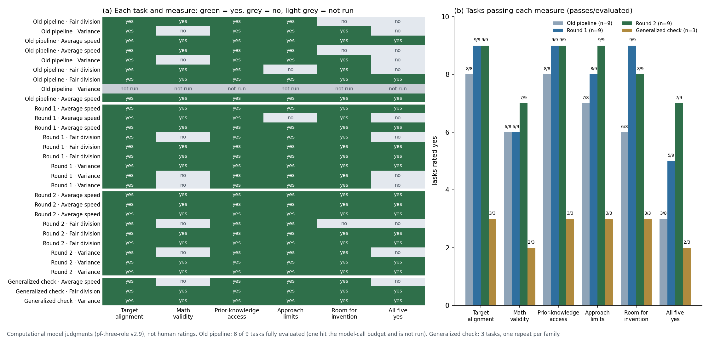

Does a small model write Productive Failure problems as well as a large one?
One topic, one theme, two models, five rubric dimensions, two blinded human raters.
Source: Rahimi et al., Methods and Table 2. Numbers on this page come from the paper.
02 · Design
How the study ran
Source: Methods, "Problem Generation" and "Evaluation Process".
03 · Controls
Only the model changed
The paper holds these fixed across all 60 problems.
Source: Methods, "Problem Generation". Student interest is held constant, but the paper does not name it beyond the sports theme.
04 · Is the topic single?
One standard, one domain, one grade
Verdict: single at standard, domain, grade and theme level. The word "topics" (plural) is never backed by a second standard. The five prompt examples are the one gap.
05 · The prompt
Six parts, identical for both models
Sampling settings are not reported. The full prompt text is not published.
06 · The rubric
Five dimensions, scored 1 to 3
low (1)moderate (2)high (3)
Total score = sum of the five, range 5–15. Source: Table 1.
07 · Results
GPT-4o scored higher on every dimension
GPT-4oPhi-3 mini
Means on the 1–3 scale, from Table 2 (n = 30 per model).
08 · Where the gap is
Effect size is largest in MR and OE
Cohen's d from Table 2. Total score: d = 1.16 (13.38 vs 10.67). The paper links the MR and OE gap to PF's focus on exploration.
09 · What is missing
Gaps that matter for a replication
The authors also name their own limits: one domain and grade, 60 problems, and a call for classroom review.
10 · Our replication
What we match, and what we do not
Themes and topics are extended on purpose. The raters are AI passes, so the human-rater design cannot be copied. The examples and the generation prompt cannot be checked against Rahimi, because neither text is published.
11 · Proposed cells
Four cells: different themes and topics
Every cell uses the same frozen prompt and the same five StratL examples. Each cell has its own theme and its own grade 7 topic, so the set is not ratio-only.
12 · Rater design
Two blinded AI passes, shuffled separately
All 15 anchors are verbatim from the paper's Table 1 (src/evaluation/prompts/pf_rubric_setting.yaml). The judge also gets the fixed setting a trained rater would know; it is the same for both models, so the model stays hidden.
13 · Decisions
Three choices to confirm before generation
Luna is gpt-5.6-luna here: gpt-6-luna returns 404 in this environment. Errored attempts are deleted, not replaced. Deleted: the calibration run with one API connection error, and four unfinished attempts. Kept as a superseded pilot: six completed attempts.
14 · Our results, same plot
The gap is largest in open-endedness and multiple representations
Four theme cells pooled: 117 GPT-5 mini and 120 GPT-4.1 final tasks; 3 of 240 attempts were lost to a deleted judge call or an invalid output. Scores are the mean of two blinded Luna passes on the 1–3 scale. Cohen’s d is descriptive, not a test, and positive values mean GPT-5 mini scored higher. AE has no variance in either model, so d is undefined (n/a). APK is 2.99 against 2.97, effectively a tie. Both passes come from one model, and there is no human rating.
15 · Paper and replication, same plot
Both studies show the largest gaps in multiple representations and open-endedness
Rahimi values from Table 2 (GPT-4o vs Phi-3, n = 30 each, two trained human raters). Ours: GPT-5 mini vs GPT-4.1, four theme cells, two Luna AI passes. The model pairs, raters and tasks differ, so compare the pattern of gaps, not the absolute levels. In both studies the top two gaps are MR and OE. Cohen’s d is first model minus second. Affective engagement is at the ceiling in our run (no variance), so its gap is undefined.
16 · The definition
PF is defined by its outcome: fail first, learn more later
Phase 1 must end in a shortfall; only the Phase 2 comparison turns it into learning. Sources: Kapur 2008, 2016; Kapur & Bielaczyc 2012.
17 · How PF is intended to support learning
Four learning mechanisms that PF design must trigger
The same authors use three design principles to put the four mechanisms into practice.
1
Use complex problems that challenge but do not frustrate, rely on prior knowledge, and allow multiple representations and solution methods.
Supports mechanisms(a) and (b)
2
Provide opportunities for explanation and elaboration.
Supports mechanisms(b) and (c)
3
Compare what failed or partial methods can and cannot do, and use that comparison to build the standard method.
Supports mechanisms(b), (c) and (d)
The principles guide both phases: the initial attempts and the later teacher-led comparison.
19 · Definition to design
PF is defined by its outcome, so a task can only be judged by what it makes possible
The steps that follow describe what the design must trigger, and which of those a task text can carry.
20 · Expert tasks
The expert tasks share one pattern: a familiar method that falls short
These design features are recorded by the repository from the source papers. They describe the expert tasks, not student data.
21 · Derivation
Five measures, with two conditional checks
If a prerequisite is No or Unclear, its dependent measure is Not assessed, not No. Familiar approaches may succeed or fall short; record both. Invention is judged separately. Full definitions.
22 · What the measures show
Our generated tasks miss the concept and the method most often
MeasureVerdictCountWhat we saw
Target alignmentOften missed27 of 30GPT-4.1 music tasks flagged off target by both judges; a lower bound.
Mathematical validityNot yet judged—New rule: assess only where alignment is Yes. Historical math concerns are not conditional ratings.
Limits of familiar approachesExamples only5/3 · 20/11Assessed only where accessibility is Yes. Drill C’s twist cannot change the answer. No attempts yet.
Room for inventionOften missed24 of 30Basketball questions name the concept, “proportional”, and prescribe methods.
Historical flags and keyword matches over 238 ready tasks before the evaluator was run. For the executed five-measure results and v3.0 calibration, see Slide 26 and Slide 27.
23 · Evidence
Each verdict rests on a checkable example
27 of 30Target alignment
GPT-4.1 music tasks flagged by both judges. They never present the data as a sample, although 7.SP.B.4 concerns samples.
2 concernsMath and prerequisites
Garden-028: a triangle-side inconsistency. Garden-019: √3 beyond prerequisites for a full solution, not proof of an inaccessible start. Neither is a new conditional rating.
5/3 and 20/11Limits of familiar approaches
Basketball-021, Drill C: makes per session are 5/3 at every length, so the rest-break twist cannot change the answer.
24 of 30Room for invention: concept
Basketball questions ask whether a relationship is “proportional” (GPT-4.1: 0 of 30). Garden-028 gives its formula as a “Hint”.
100 of 118Room for invention: method
GPT-5 mini tasks are multi-part worksheets (GPT-4.1: 0 of 120). Numbered sub-questions set the route for students.
Counts are keyword and judge-flag heuristics over ready tasks; worked examples were checked by quotation or exact calculation.
24 · Scope
The five measures cover task design; the rest of PF needs students
Affective engagement is not part of this chain, so Rahimi’s AE score is reported only as a comparability column next to the Table 1 scores.
25 · Conclusion
High rubric scores do not show that tasks are good PF tasks
Direct generation reaches the rubric’s ceiling, but its tasks often name the concept, prescribe the method, or are solved outright by familiar prior methods.
Slides 26–29 plot the executed five-measure campaign (893 saved conditions), the v3.0 calibration, and the 76-task solver recall benchmark. All judgements are model-based, not human-validated or student-tested.
26 · Executed 893-task campaign (pf-three-role/v2.1, Luna primary reviewer)
Open wording is common (78%), but approach limits are rare (12%)
Yes
Partly
No
Unclear
Why 1–3 are high while 4 is 12%: 61% of the 893 catalog repeats 4 broad CCSS standards (prompt echoing inflates 1), validity (2) is gated on aligned tasks, and accessibility (3) is the “not frustrated” floor gate (both routine and PF tasks are startable). Measure 4 is the “challenged” ceiling: 77% fail because taught prior methods already solve them.
The solver recovers 85.5% of all 256 approaches (91.4% with partial), 92.9% on expert PF, and 100% on routine tasks
Complete match (yes)
Partial match (partly)
Task-level PF trap / working-route coverage
Routine-task direct solve (no fake failure)
Source: experiments/results/pf_solver_recall_20261016/summary.json (Luna + GPT-4.1 panel, mean 4.04 attempts/task; Luna alone achieves 84.4% strict / 89.8% w/ partial). Manual check audited 12 tasks across all 6 cohorts.
30 · Breakdown by generator model (240 Rahimi Main30 + 90 Benchmark v4 Direct)
GPT-4.1 writes open stories that familiar math solves; GPT-5 mini writes guided worksheets
GPT-4.1 Direct (n = 120, Main30)
GPT-5 mini Direct (n = 120, Main30)
Luna Direct V1–V3 (n = 90, Benchmark v4)
Accessibility gate is 98–100% Yes across all three models (119/120, 117/120, 90/90). Despite near-ceiling Rahimi rubric scores (13.3–14.8 / 15), only 1–9% of directly generated tasks satisfy all five PF conditions.
31 · Pipeline Storyline (1/2) · Why Decompose & Why We Tried Eedi MCQs First (Branch A)
To fix direct generation, we decomposed PF design (D1 → D2 → D3) and first tried mining student error paths from MCQs
Sources: docs/mcq/MCQ_GENERATION_OVERVIEW.md and experiments/results/phase1_mcq/structured_generation_full_v1_20260810/ (200 held-out Eedi questions, 11 conditions, 3 runs = 6,600 question-runs and 19,800 structured distractors).
32 · Pipeline Storyline (2/2) · What MCQs Taught Us & Why We Pivoted to the Learning Commons Graph (Branch B)
MCQs capture post-instruction slips, whereas real PF traps require valid prior tools that hit a limit
Sources: docs/mcq/MCQ_EVALUATION_OVERVIEW.md (structured_eval_full_v2_20260810/aggregated.json) and docs/pf-generation/PF_PIPELINE.md Section 4. This finding bridges Phase 1 (MCQ error pathways) to Phase 2 (curriculum-grounded PF pipeline).
33 · Improved PF Pipeline vs. Direct Baselines (pf-three-role/v2.9)
Adding the Learning Commons graph and impasse checks raises All-5 PF pass rate from 33% to 78%
Direct Generation Baselines
Old Saved Pipeline (Oct 11)
Improved Pipeline (LC Graph + Impasse Package, Rounds 1 & 2)
Sources: pf_generated_tasks_v29_20261015, pf_pipeline_lc_impasse_v2_20261015 (Round 1), and pf_pipeline_lc_impasse_v3_20261015 (Round 2). Nine fresh generations (3 families × 3 repeats); computational model judgements, not budget-matched or human-validated.
34 · Old pipeline vs refined pipeline (pf-three-role/v2.9, same evaluator for all three)
The refined pipeline passes more tasks on every measure, but only 9 tasks per arm
Old saved pipeline (8 of 9 evaluated; 1 not run)
Refined · Round 1 (n = 9)
Refined · Round 2 (n = 9)
Sources: pf_generated_tasks_v29_20261015 (old) · pf_pipeline_lc_impasse_v2_20261015 (Round 1) · pf_pipeline_lc_impasse_v3_20261015 (Round 2). Computational model judgements. One old-pipeline task (variance) hit the model-call budget before any judgment, so the old arm has 8 evaluated tasks; its all-five count is 3 of 8 evaluated, and the bars above show it on the 9-task scale. The three families were used to develop the Round 2 prompts, so this is not a holdout test. Each arm has nine tasks from one run, so the differences are not statistically established. The counts of tasks that no familiar approach fully solves are 2 for the old pipeline, 2 for Round 1, and 0 for Round 2; the reasons for this change have not been analysed.
35 · Per-task view of the four arms
Each task and measure: where the refinement added passes

Computational judgments (pf-three-role v2.9), not human ratings. Built by scripts/plot_pf_pipeline_rounds.py from saved evaluations only; no model calls. Old arm: 8 of 9 tasks evaluated. Generalized check: 3 tasks, one repeat per family.
36 · Motivation and changes for each refinement round
Each round responded to the failures of the one before
Round 1 and Round 2 differ only in the brief-proposal and writer prompts; the Round 2 changes added task-specific numbers, which the generalization pass then replaced with general mechanisms.
Each arm outputs a prior-skill set K_prior and a task T; we test left-to-right validity (Gate 1) and whether a K_prior-only solver hits the trap (Gate 2)
Also track the valid-skill ratio |K_valid| / |K_prior| to see how many proposed prior skills in each arm's set are usable stepping stones rather than irrelevant filler.
Gate 1 invalid/spoiler sets drop from 15/30 (Direct) to 4/30 (Pipeline without LC) to 0/30 (Pipeline with LC), raising productive traps from 6/30 to 17/30 to 21/30
Source: experiments/results/pf_progression_bridge_30cases_3arms_20261016/summary_three_arm.json (30 CCSSM progression topics across Grades 5–10; 30/30 tasks produced per arm; gpt-5.6-luna).
39 · Gate 1 Prior-Knowledge Audit — What Goes Wrong in K_prior Without Learning Commons
Direct leaks the target move in 15/30 sets; Pipeline without LC still invents 4 spoiler formulas and 6 disconnected skills; LC Grounding has 0 spoilers
Source: Per-item Gate 1 classifications in experiments/results/pf_progression_bridge_30cases_3arms_20261016/evaluations_three_arm/*.json.